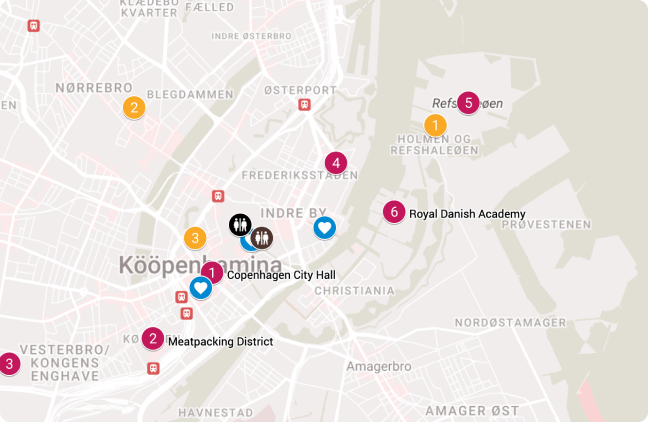
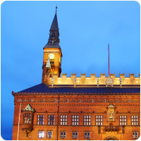
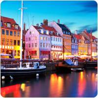

Navigate Copenhagen Fashion Week with our interactive map, designed to guide you through key venues, top dining destinations, iconic city spots, and essential facilities.
Tap a location to find more details, making it easy to plan and explore each part of your Copenhagen Fashion Week experience.
Facilities

City Hot Spots
Restaurants
Venues
Tap a location to learn more

11
12
13
14
MAP

Copenhagen City Hall
Historic landmark hosting some of the most anticipated shows of the week, blending traditional architecture with cutting-edge fashion.
Meatpacking District
Trendy, urban space with an edgy, industrial vibe. A hub for pop-ups and experimental fashion events.
Carlsberg Byen
An innovative district blending history with modernity, offering a unique setting for runway shows and events amidst the iconic former brewery buildings.
Design Museum Danmark
Celebrating the intersection of design and fashion. Expect curated collections in a setting that honors Danish design heritage.
The Royal Danish Academy of Fine Arts
Where fashion meets innovation. Known for workshops, lectures, and exclusive runway shows in a creative setting.
Refshaleøen
Former industrial site now turned cultural hotspot. Known for its unconventional shows and immersive fashion experiences.
venues
Copenhagen Cityhall
Timeless elegance
meets the heartbeat of fashion.

city hotspots
Nyhavn
For visitors seeking a picturesque part of Copenhagen.
Strøget
A famous shopping street for both fashion and food.
Tivoli Gardens
A cultural landmark near Copenhagen Central.
Superkilen Park
A public space that brings communities together.
AMASS
A taste of innovation,
rooted in sustainability.
BÆST
BLÆST brings a creative twist to Nordic cuisine, using locally-sourced produce to craft modern dishes in an intimate, stylish setting. Known for its relaxed vibe and inventive plates, it's a spot for food lovers seeking something fresh and unique.
AMASS
AMASS is known for its commitment to sustainability, innovative cuisine, and zero-waste philosophy. Set in an industrial space with a vibrant urban garden, it offers a menu focused on seasonal, locally-sourced ingredients.
Vækst
Nestled in a greenhouse-inspired space, Vækst specializes in Scandinavian dishes with a strong emphasis on vegetables and seasonal flavors. The bright, plant-filled atmosphere makes it perfect for a relaxed dining experience focused on local, sustainable ingredients.
SimpleRAW
SimpleRAW specializes in plant-based dishes without gluten, dairy, or refined sugar. It's a cozy spot for a healthy meal with fresh, affordable options.
restaurants